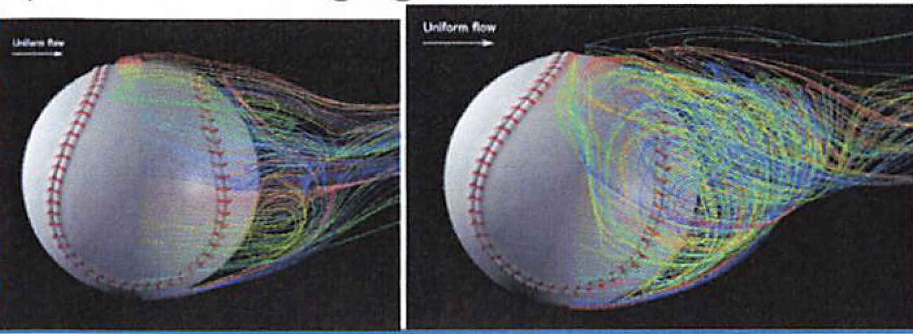

- マルチモーダルセンサーによる歩行計測とデータ解析：当プロジェクトでは、さまざまなセンサーを利用して人間の歩行パターンを計測し、そのデータを解析することで、健康状態や運動機能の評価を目指しています。 この研究は、リハビリテーションや運動科学の分野に対して新たな洞察を提供することが期待されています
- モーションキャプチャーサポート加速度センサーを使って人の動作を計測し、 運動のパフォーマンスを上げる研究を行っている。 また、ポータルの導入の流れをコンピュータで解析し、 特に異常がないの野球の研究を行っている。
